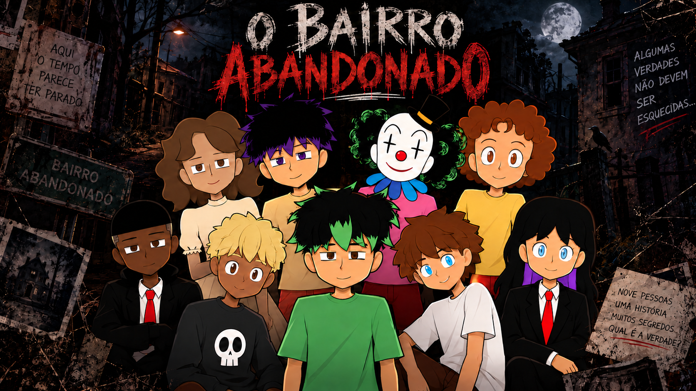
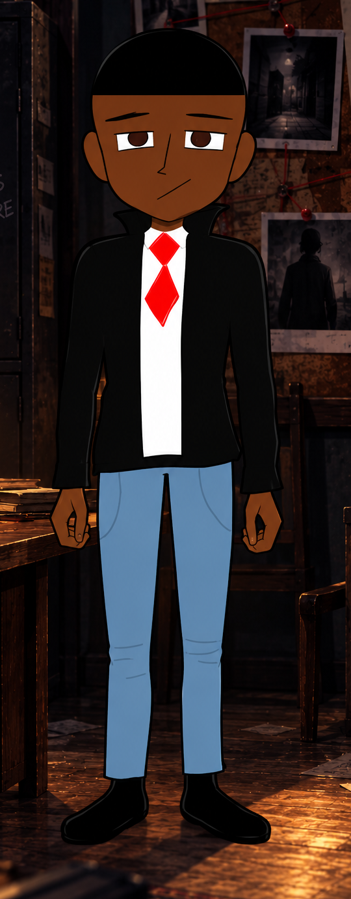

\n
\n
\n
\n

▶ INICIAR INVESTIGAÇÃO
Pular para o conteúdo principal
✦
O BAIRRO ABANDONADO
NARRATIVA INTERATIVA · INVESTIGAÇÃO · RECURSIVIDADE
▶
COMEÇAR INVESTIGAÇÃO
♫
MÚSICA: INICIAR
◉
NARRAÇÃO
Ⅱ
PAUSAR
A−
A+
◐
▣
↻
NOVA
INVESTIGAÇÃO / O BAIRRO ABANDONADO
ARQUIVO 01
CENA DA INVESTIGAÇÃO

Escolha o próximo passo
← VOLTAR À CENA ANTERIOR
AS ROTAS PODEM SE CRUZAR
E RETORNAR À INVESTIGAÇÃO
×
Percurso da investigação